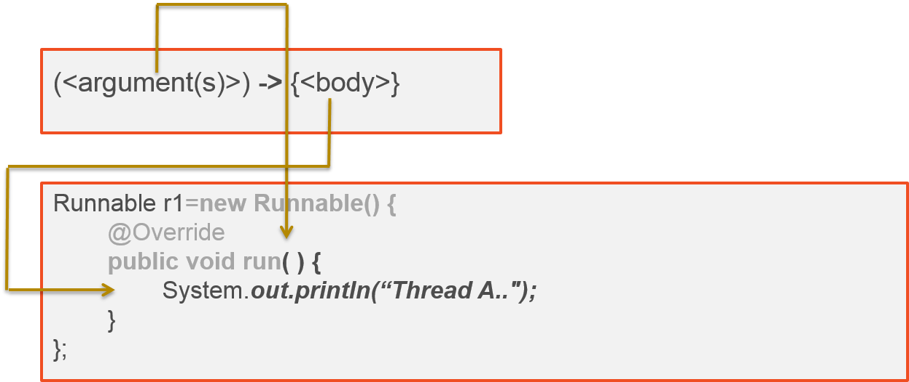
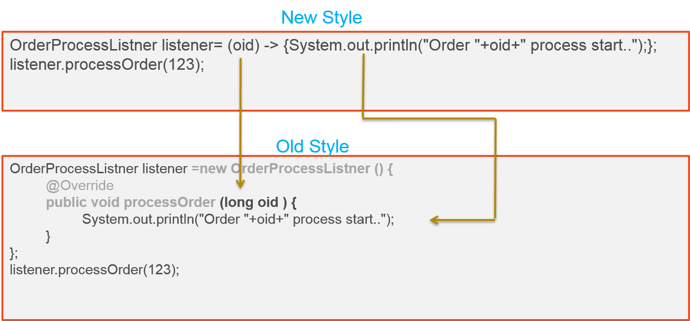

Introduction
There are different kinds of programming languages like procedure oriented language, functional programming language and object oriented programming language.
Java is, primarily, an object-oriented programming language. In both object-oriented and functional languages, basic values can dynamically encapsulate program behavior. Object oriented languages have objects with methods and functional languages have functions. Java enabled functional programming from J2SE 8.
Java has different releases and each release has new APIs. From programming structure point of view, I like to divide these releases into 3 trends.
- Trend one is from the Java initial version to JDK 1.4. In these versions there are lot of enhanced API but the programming structure remains same.
- Trend two is from J2SE 5 to J2SE 7. From J2SE 5 on words due to generics and annotations the programming structure got changed.
- Trend three is started from J2SE 8. This version introduced lambda expressions and other features. Due this, the Java programming structure is changed and traditional Java developers need to adopt the functional programming along with object orient programming.
J2SE 8 included JSR-335 which includes:
- Lambda expressions and method reference - Till J2SE 8, Java was supporting only pass by value for methods. From version 8 onwards we can pass the behavior. That means we can pass the method to another method as argument.
- Enhanced interfaces and target types
- Default and static methods in interface - From now onwards we can't say that Interface contains only abstract methods. Yes, from version 8 Interface can contain methods with a definition.
Lambda expressions also called as closures. Closure is a function or a reference to a function together with referencing environment. Let's take a small Javascript example to explain this. If you don't understand the Javascript no problem, try to understand the concept.
Example 1:
function sayHello(name) {
var text = 'Hello ' + name;
var sayAlert = function() {
alert(text);
}
sayAlert();
}
Example 2:
function sayHello(name) {
var text = 'Hello ' + name;
var sayAlert = function() {
alert(text);
}
return sayAlert;
}
In both the examples, sayAlert is a variable which holds the reference of behavior (anonymous methods) instead of the value. In example 1, sayHello method is calling the function through sayAlert variable. In the example 2, method is returning the variable sayAlert which is actually a reference of a behavior instead of value. Now try to read the closure definition again. Hope you understand.
Now, coming to Java we need to learn enhanced interface feature like functional interface which is introduced J2SE 8 before going to lambda expressions.
Note - if your using Eclipse IDE for development, you need to download Luna version to support Java 8.
Functional Interface
A functional interface also called as callback interface is an interface that has just one abstract method. Do you remember any interface which has a single method declared in it? Yes, below are some interfaces which have only one method.
So, if interface contains only one method declared in it means it's a functional interface? No. Below are the rules to say an interface as functional interface.
- Interface should be annotated with @FunctionalInterface. This annotation is introduced in J2SE 8
- Interface should have only one abstract method
Java compiler may throw a compile-time error if code violates the functional interface rule. Now all existing interfaces which have a single abstract methods are annotated with @FunctionalInterface. If you have a de-compiler try to decompile the interfaces which have a single abstract method.
See below example for functional interface.
package com.techjira.ecom.order;
@FunctionalInterface
public interface OrderProcessListner {
void processOrder(long orderid);
}
OrderProcessListener is an interface holds only one abstract method called processOrder(long
orderid) .
J2SE 8 also added a new package java.util.function which contains a list of functional interfaces which can be used commonly.
You might have some questions in mind on functional interface like,
- How to use the functional interface?
- What is the use of functional interface?
- Why the functional interface have one abstract method?
Lambda expressions
Lambda expression also called closure or anonymous method. Lambda expressions are aimed to address the vertical problem. Vertical problem means writing common lines of source code to encapsulate a single aspect of behavior. Let see this with some example. If you want to write a code in Java for thread, you may write like this,
public class AnonymousTest {
public static void main(String[] args) {
Runnable r1=new Runnable(){
@Override
public void run() {
System.out.println("Thread A..");
}
};
Thread t=new Thread(r1);
t.start();
}
}
In this example, whatever is highlighted from line 4 to line 6 i.e., creating an anonymous class and
override
the run() method is common for every time. This is called vertical problem. Lambda expressions will
resolve this problem.
Lambda expression is an anonymous method and the syntax looks like below.
(<argument(s)>) -> {<body>}
Where <arguments> is a list of arguments for functional interface abstract method and the <body> is a logic to hold. Below is the comparison between lambda expression syntax and anonymous class definition to understand it better,

The grayed out code is no more required now. We can use lambda expression only with functional interface. From J2SE 8 Runnable interface is a functional interface and by using above highlighted text in comparison diagram we can right the code like below.
public class AnonymousTest {
public static void main(String[] args) {
Runnable r1=()->{System.out.println(�Thread A..�);}
Thread t=new Thread(r1);
t.start();
}
}
We can write the class in another way,
public class AnonymousTest {
public static void main(String[] args) {
new Thread(()->{
System.out.println("Thread A..");
}).start();
}
}
Let see with other example. Below OrderProcessListner interface is a functional interface.
package com.techjira.ecom.order;
@FunctionalInterface
public interface OrderProcessListner {
void processOrder(long orderid);
}
package com.techjira.ecom.order.test;
import com.techjira.ecom.order.OrderProcessListner;
public class OrderProcessListnerTest{
public static void main(String[] args) {
OrderProcessListner listener= (long oid) -> {System.out.println("Order "+oid+" process start..");};
listener.processOrder(123);
}
}
In the above example, 123 value will be passed as an argument oid and then the body will be executed.
Now
the confusion point is how the body will be executed when you call listener.processOrder(123). That's
the
reason functional interface has a constraint that it should have only on abstract method. Hence
OrderProcessListner interface has only one abstract method, the JVM will automatically override processOrder()
method. See below diagram to understand it better.

Lambda expression rules
We need to follow some rules while using lambda expression.
-
Lambda expression may contains zero, one or more arguments
If there no argument we need to use empty brackets. Ex.
Runnable r1=()->{ System.out.println("Thread A.."); }If only one argument we can use with bracket or without bracket like below,OrderProcessListner listener= (oid) -> { System.out.println("Order "+oid+" process start.."); };orOrderProcessListner listener= oid -> { System.out.println("Order "+oid+" process start.."); };If you have more than one argument we need to use bracket with comma (,) separated -
The type of the parameters can be explicitly declared or it can be inferred from the context
OrderProcessListner listener= (long oid) -> { System.out.println("Order "+oid+" process start.."); }; -
The body of the lambda expressions can contain zero, one or more statements.
If the body contains simple statement we can ignore the curly brackets({}). For example,
OrderProcessListner listener= oid -> System.out.println("Order "+oid+" process start..");
Key difference between anonymous class and Lambda expressions
- Compiler will convert the lambda expression as private method for a class but anonymous class will
generate new class. For example,
package com.techjira.ecom.order.test; import com.techjira.ecom.order.OrderProcessListner; public class AnonymousTest { public static void main(String[] args) { OrderProcessListner listener=new OrderProcessListner() { @Override public void processOrder(long orderid) { System.out.println("Order "+orderid+" process start.."); } }; listener.processOrder(123); } }If you compile above file, two class files will be generated. One is AnonymousTest.class and another one is AnonymousTest$1.class. If you replace the above code with lambda expression like below,package com.techjira.ecom.order.test; import com.techjira.ecom.order.OrderProcessListner; public class AnonymousTest { public static void main(String[] args) { OrderProcessListner listener= oid -> System.out.println("Order "+oid+" process start.."); listener.processOrder(123); } }If you compile this code it will generate a single class AnonymousTest.class with private method private static void lambda$0(). - Hence anonymous class generates new class, this key word refers to anonymous class. Lambda expression generate new method with in the class this key word refers to the parent class.
Iterate collection with lambda expression
Let's take an example before dig into the concept.
package com.techjira.ecom;
public class Item {
long id;
String title;
Integer price;
public Item(long id, String title, Integer price) {
this.id = id;
this.title = title;
this.price = price;
}
public long getId() {
return id;
}
public String getTitle() {
return title;
}
public Integer getPrice() {
return price;
}
}
package com.techjira.test;
import java.text.NumberFormat;
import java.util.ArrayList;
import java.util.List;
import java.util.Locale;
import com.techjira.ecom.Item;
public class CollectionTest {
public static void main(String[] args) {
List- itemList=new ArrayList
- ();
itemList.add(new Item(1,"iPhone 6 64GB",299));
itemList.add(new Item(2,"Chrome cast",28));
itemList.add(new Item(3,"3+2 sofa set",1099));
for(Item item:itemList){
displayItem(item);
}
}
private static void displayItem(Item item){
Locale local=new Locale("en", "US");
String price=NumberFormat.getCurrencyInstance(local).format(item.getPrice());
System.out.format("%0$-5s %0$-30s %0$-10s\n", item.getId(),item.getTitle(),price);
}
}
If you see above example, I am trying to iterate the items by using extended for loop. But the iteration
logic
is written by me (extranel interation). From Java SE 8, iteration can be taken by JVM (internal iteration).
What
you can do is, you can tell to JVM what need to be done while iteration. java.lang.Iterable
interface added a new method forEach() which uses java.util.function.Consumer
functional interface to iterate internally. See below example in new style.
package com.techjira.test;
import java.text.NumberFormat;
import java.util.ArrayList;
import java.util.List;
import java.util.Locale;
import com.techjira.ecom.Item;
public class CollectionTest {
public static void main(String[] args) {
List- itemList=new ArrayList
- ();
itemList.add(new Item(1,"iPhone 6 64GB",299));
itemList.add(new Item(2,"Chrome cast",28));
itemList.add(new Item(3,"3+2 sofa set",1099));
itemList.forEach(item->displayItem(item));
}
private static void displayItem(Item item){
Locale local=new Locale("en", "US");
String price=NumberFormat.getCurrencyInstance(local).format(item.getPrice());
System.out.format("%0$-5s %0$-30s %0$-10s\n", item.getId(),item.getTitle(),price);
}
}